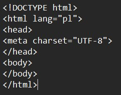
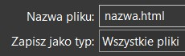
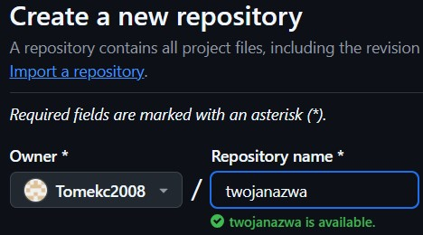
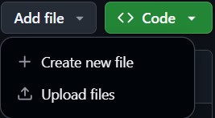
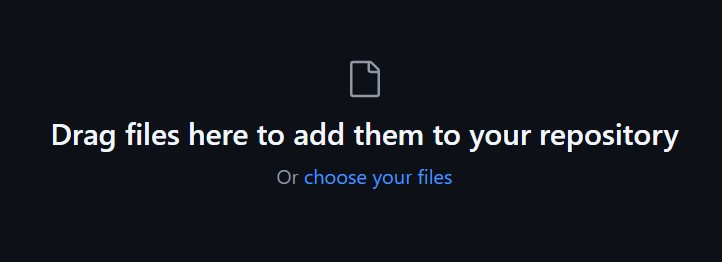

JAK STWORZYĆ STRONĘ W HTML?
Aby stworzyć stronę w html otwórz notatnik i napisz w nim strukturę strony:

Następnie zapisz plik jako typ "Wszystkie pliki", a po nazwie pliku dodaj ".html" i otwórz go w dowolnej przeglądarce

2.EDYTUJ
Możesz dowolnie edytować i bawić się trzcionkami, kolorami i zdjęciami, używając komend:
<"title"> tekst <"/title">"
- tytuł dokumentu wyswietlany w okienku Dokument Title;
<"body bgcolor=kolor_tła"text="kolor_tekstu" link-"kolor_linków" alink="kolor_połączenia_uaktywnionego_" vlink="kolor_odwiedzanego_połączenia">
- w poleceniu body definiuje się zalecenia dla całego dokumentu. Kolor można definiować używając nazw angielskich np. black, silver, gray, white, maroon, red, purple, fuchsia, green, olive, yellow, navy, blue, teal, aqua itp. lub heksadecymalnie #000000 - czarny, #7fffdy - akwamaryna, #0000ff- niebieski, #8a2be2 -fioletowy, #a52a2a - brązowy, #d2691e - czekoladowy, #ff7f50 - koralowy, #00ffff - cyjan, #ffd700 - złoty, #808080 - szary, #ffffff - biały itp.
<"hl"> tekst <"/hl">
- tytuł całej strony;
<"p">
- komenda ta kończy bieżący akapit i dodaje na jego końcu jedną pustą linię;
<"br">
- wymuszenie przejścia do nowej linii;
<"a href"="URL">tekst<"/a">
- odnośnik do strony WWW o podanym URL (uniform resource locator); po wybraniu wyróżnionego tekstu następuje załadowanie żądanej strony;
<"a href"="mailto:autor@adres">tekst<"/a">
- zdefiniowanie połączenia do adresu e-mail
<"img src"="URL" "alt"="text" "width"=x "height"=y "border"=z>
- włączenie w miejscu wystąpienia tej komendy obrazka (bitowe pliki graficzne .jpg i .gif) o podanym URL, width - szerokość obrazka, height - wysokość obrazka, border - grubość ramki (w pikselach).
<"b">tekst <"/b">
- tekst wyświetlony czcionką pogrubioną
<"i">tekst <"/i">
- tekst wyświetlony czcionką pochyloną
<"u">tekst<"/u">
- tekst wyświetlony jest podkreślony;
<"blink"> <"/blink">
- tekst migający;
<"center">tekst <"/center">
- centruje tekst
<"font face"-'Times New Roman" size=7 color="#0000ff'>Jakiś tekst<"/font">
- ustawianie parametrów czcionki
UWAGA! w komendach specjalnie użyto cudzysłowia aby się one nie aktywowały, normalnie nie trzeba go dodawać
Jeśli już masz gotowy plik możesz go umieścić na dowolnej stronie, która pozwala uzyskać własną domenę aby strona była publiczna, przedstawie to na przykładzie GitHub'a
a) Zarejestruj sie na stronie GitHub
b) W zakładce "your repositories" stwórz nowy
i dobierz domenę która jest wolna i tobie odpowiada

c) Nastepnie klikasz na twoje nowe depozytorium i dodajesz pliki

i ostatecznie wrzucasz swój plik w html, zdjęcia i inne pliki, które znajdują sie w kodzie

Strona przygtana przez Tomasza Cichonia kl.2H